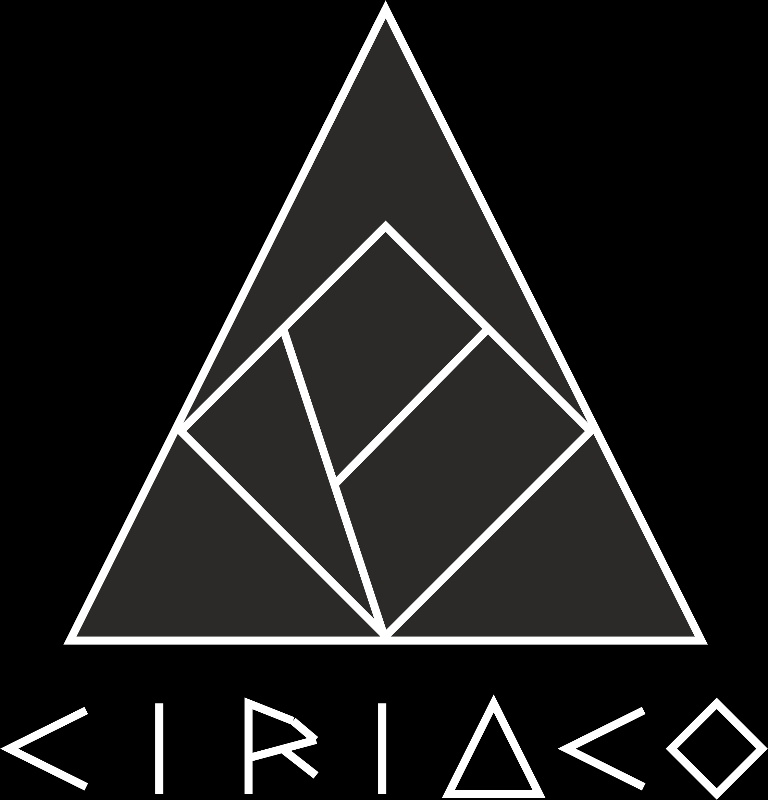

Una arquitectura inmutable de granularidad fina desacoplada de la capa tipográfica y articulada con agentes de verificación semántica y módulos Atmo-Native Graph-RAG.
Este proyecto científico lleva con profundo orgullo y gratitud el nombre de mi amado padre, Ciriaco, un abnegado profesor de educación primaria quien dedicó su vida a sembrar con paciencia, amor y rigor la semilla del saber en generaciones de niños. Hoy, en la fecha de su cumpleaños, esta tesis rinde homenaje a su eterno legado, transformando el conocimiento científico en un bien estructurado, reutilizable y accesible para la ciencia y la sociedad.
"La educación es el arte de hacer permanente la luz del conocimiento."
Selecciona un vértice de Objeto Atómico (`Atmo`) en el grafo para auditar su linaje $W3C\ PROV\text{-}O$ y su sellado criptográfico $\text{SHA-256}$.
Desacoplamiento estricto entre la edición lógica estructurada y la compilación en tiempo real hacia formatos IEEE y APA 7ma edición.
Modificando bloque semántico sin preocuparse por márgenes o fuentes:
Resultados esperados de la evaluación preexperimental ($O_1 \rightarrow X \rightarrow O_2$) en el GICDIAC.
El Core Engine de CIRIACO está disponible para licenciamiento institucional e integración con sistemas de Inteligencia Artificial corporativos mediante APIs Atmo-Native Graph-RAG bajo modelos de Innovación Abierta.